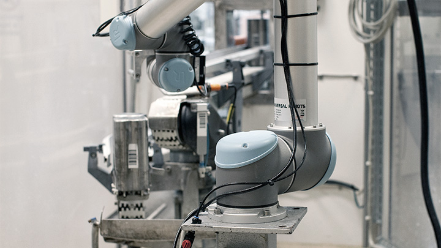

Машиностроение / Металлообработка
Машиностроение / Металлообработка

Эти отрасли являются одним из направлений приложения усилий и опыта компании Aprotec. Мы готовы предложить нашим потенциальным партнерам следующие услуги в данной области:
Кроме этого мы готовы решать задачи по интеграции нового оборудования в существующие линии использующие современные системы управления процессом. Разрабатывать аппаратно-программные модули для сбора и анализа данных с существующего оборудования.